Horizon is the OpenStack service that serves as the basis for the HPE Helion OpenStack dashboards.
The dashboards provide a web-based user interface to HPE Helion OpenStack services including Compute, Volume Operations, Networking, and Identity.
Note that for Ceilometer metering, only a limited set of meters are selectable from the Metric option. This option does not currently provide access to all available meters.
The left side of the UI displays Project, Admin, and Settings sections. They expand and contract to show available tasks grouped into panels.
Across the top are menus to switch between projects and menus where you can access user settings.
If your administrator set a hostname value for external_name in your network_groups.yml file during the configuration process for your cloud then Horizon will be accessed over port 80 on that hostname.
If your administrator did not set a hostname value then in order to determine which IP address to use to access Horizon you can use this command from your lifecycle-manager node:
grep vip-HZN-WEB /etc/hosts
The output of that command will show you the virtual IP address for Horizon that you should use.
The default username for the Administrator user is admin. In order to find the randomized password that is created for this user you will need to look into the ~/service.osrc file on the lifecycle-manager node. You can do that with this command:
cat ~/service.osrc
| Browser | Status | Versions |
|---|---|---|
| Chrome | very good | 43.0.2357.81 |
| Firefox | very good | 31+ Earlier versions ? |
| Firefox ESR | very good | 31+ |
| Internet Explorer 11 | good | |
| Internet Explorer 10 | good | |
| Internet Explorer 9 | ? | |
| Internet Explorer 8 and below | Not supported | |
| Safari | ? | |
| Opera | ? |
At the bottom of this page, you can see some of the services you can manage right from the dashboard. Remember that Horizon runs over TLS so you will need to use the HTTPS protocol with your Horizon IP address.
Use the Project dashboard to implement and build out your cloud. This dashboard contains tools to create virtual server instances, create and configure your network, configure access tools (such as key pairs and security groups) and cloud resource templates (stacks).
Use the Admin dashboard to view, allocate, and manage all resources within the cloud.
The Admin dashboard allows you to manage instances, define flavors, create and configure images, manage networks, view system resources, manage projects, and manage users.
Use the Settings dashboard to change your display language and settings, your time zone, and your password.
Click Settings in the user menu to display the Settings dashboard.
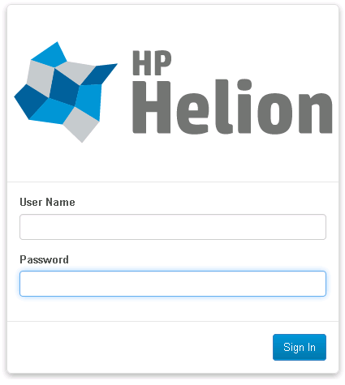
The Overview page provides a summary by project of the current utilization of major OpenStack resources. The information on this screen is drawn directly from the Compute or Nova service API and provides the ability to filter the query by date range and an option to download results into a CSV file that is compatible with Microsoft Excel or can be imported into a database.
The following screen shots illustrate some of the services you can manage in the Horizon dashboard.
Viewing System Info
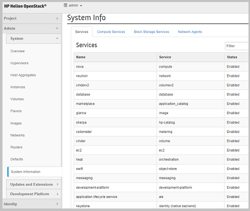
The System Info panel provides a list of all currently installed OpenStack services and their operation status.
Additional panels on the System Info display sub service status for services like Compute, Block Storage, and Network services. This is a view of the Compute Services tab. There is also a Block Storage Services tab and a tab for Network Agents.
Managing Quotas
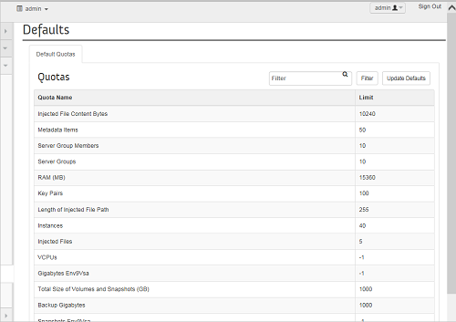
The Managing Quotas panel provides a list of system quotas that you can view and edit, such as VCPU's, RAM and Storage.
Managing Routers
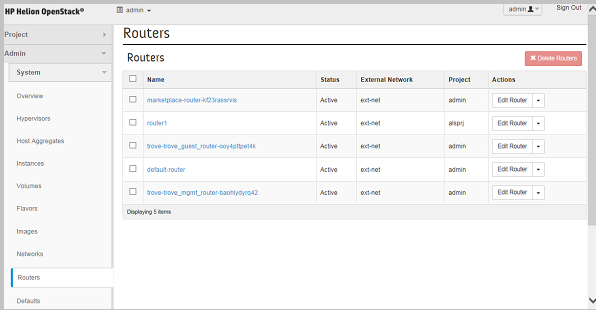
Routers are created to connect end user networks together as well as to provide external connectivity. This panel provides a list of all currently deployed routers and associated metadata and enables the system administrator the ability to create, edit, and delete routers.
Managing Availability Zones
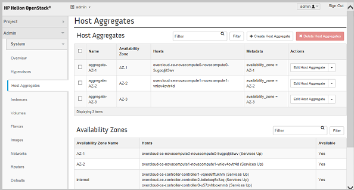
Getting Hypervisor Status
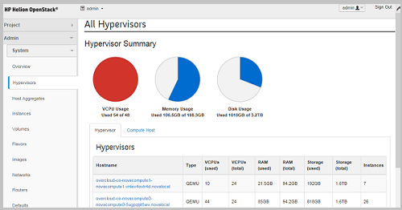
The first tab option on the Hypervisors panel provides a view of the different hypervisors currently running, which physical server each hypervisor instance is running on, the type of hypervisor, and the infrastructure resources consumed by the hypervisor.
The Compute Host tab lists all of the currently configured physical hosts, which Availability Zone each host is configured for, the status, and total consumed resources.
The Compute Host tab lists all of the currently configured physical hosts, which Availability Zone each host is configured for, the status, and total consumed resources.
Creating a DNS Record
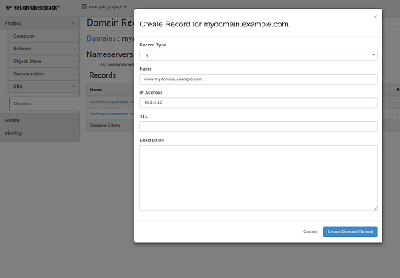
Managing Services
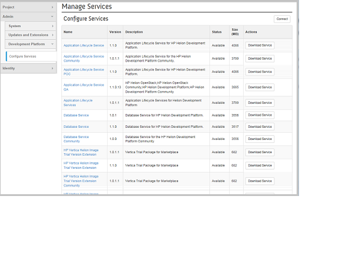
Viewing Stacks
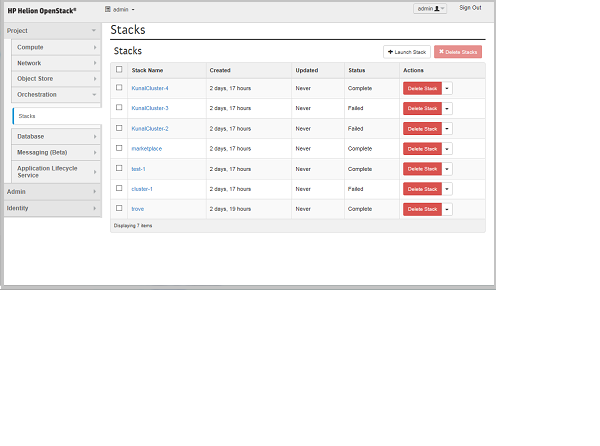
Creating a Domain
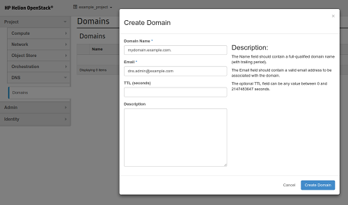
Viewing Network Topology
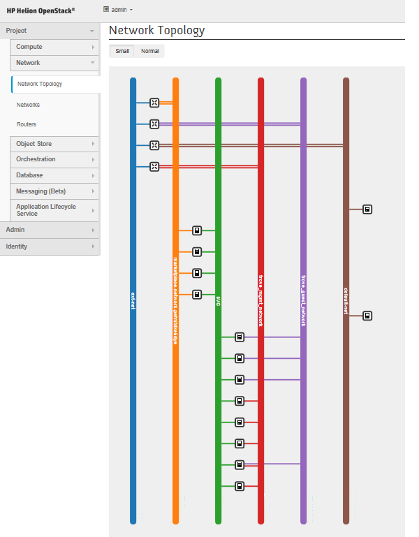
Another use case of host aggregates is to support the arrangement of hosts into logical groups for load balancing and instance distribution. Host aggregates are configured and only viewable by system admins. The end user view of a host aggregate is called an Availability Zone. Availability zones are created via the Nova API and the host aggregates function. End users can use availability zones for similar use cases. For example, an application could be deployed on hosts in multiple availability zones. A load balancer can then be configured and the instances running each deployment of the application in each availability zone can be assigned to the load balancer thus providing a measure of failover and high availability support.
Additional information on host aggregates and availability zones is available at http://blog.russellbryant.net/2013/05/21/availability-zones-and-host-aggregates-in-openstack-compute-nova/ and http://docs.openstack.org/openstack-ops/content/scaling.html.